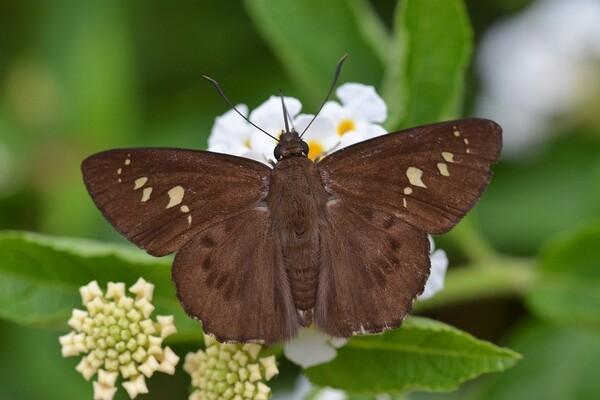
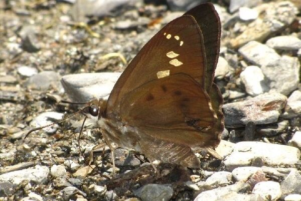
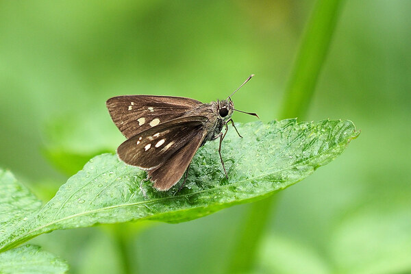
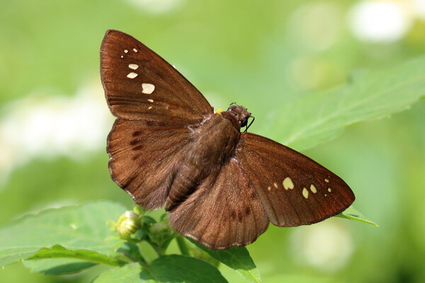
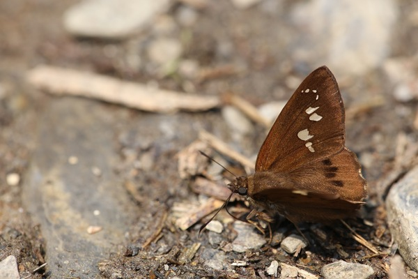
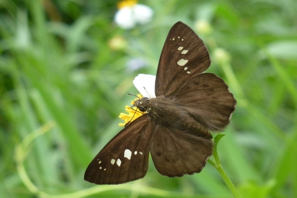

台灣瑟弄蝶
台灣瑟弄蝶（學名:Seseria formosana）也稱大黑星弄蝶、台灣黑星弄蝶，是瑟弄蝶屬的一種弄蝶。 本種為台灣特有種，分布於台灣中低海拔地區闊葉林，甚至都市林地，數量尚多。 幼蟲以樟科、木蘭科植物為食，一年多世代，成蟲主要在春、夏、秋季活動，冬季以幼蟲態越冬
展翅40-44mm，翅面黑褐色，前翅有7-9枚大小不一的白斑排列， 後翅橫斑為黑褐色點狀排列，翅腹面斑點位置與翅面同但顏色較淡，雌、雄外觀近似。 幼蟲頭部褐色，體表灰白色，以樟科等多種植物寄主。





